JAVA知识图谱
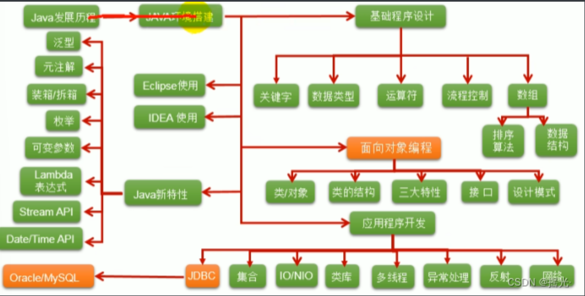
Java语言运行机制及运行过程
Java语言的特点：跨平台性
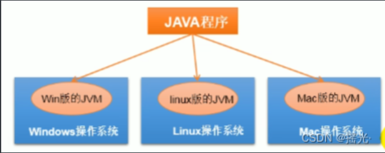
因为有了JVM，同一个Java程序在三个不同的操作系统中都可以执行。这样就实现了Java程序的跨平台性
Java版本
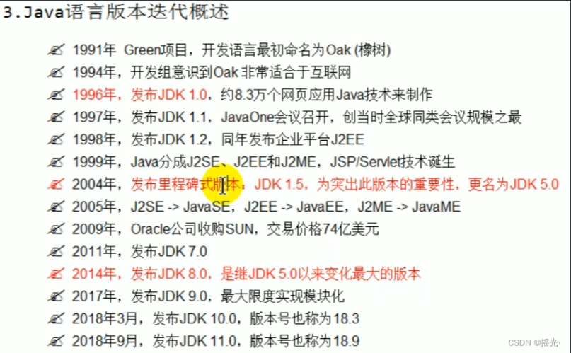
JDK与J2SE的区别
JAVA就是指JDK开发工具，所以我们可以理解为JAVA等价于JDK。JAVA有3个版本：J2SE J2EE J2ME，而J2SE桌面级应用，J2ME移动端应用，J2EE企业级应用
Java两种核心机制
Java虚拟机（JVM）
JVM是一个虚拟的计算机，具有指令集并使用不同的存储区域。负责执行指令，管理数 据、内存、寄存器。
对于不同的平台，有不同的虚拟机
只有某平台提供了对应的java虚拟机，java程序才可在此平台运行
Java虚拟机机制屏蔽了底层运行平台的差别，实现了“一次编译，到处运行”
垃圾收集机制
不在使用的内存空间应回收——垃圾回收
C/C++等语言中，由程序员负责回收无用内存
Java 语言消除了程序员回收无用内存空间的责任，它提供一种系统级线程跟踪存储空间的分配情况。并在JVM空闲时，检查并释放那些可被释放的存储空间
垃圾回收在Java程序运行过程在自动进行，程序员无法精确控制和干预
Java程序还会出现内存泄漏和内存溢出问题吗？
是的
JDK（Java Development Kit Java开发工具包）
JDK是提供给Java开发人员使用的，其中包含了java的开发工具，也包括了JRE。
开发工具：编译工具（javac.exe）打包工具（jar.exe）等
JRE（Java Runtime Environment Java运行环境）
包括Java虚拟机（JVM Java Virtual Machine）和Java程序所需的核心类库等，如果想要运行一个开发好的Java程序，计算机中只需要安装JRE即可
JDK、JRE、JVM的关系
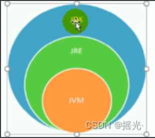
JDK = JRE + 开发工具集（例如Javac编译工具等）
JRE = JVM + Java SE标准类库
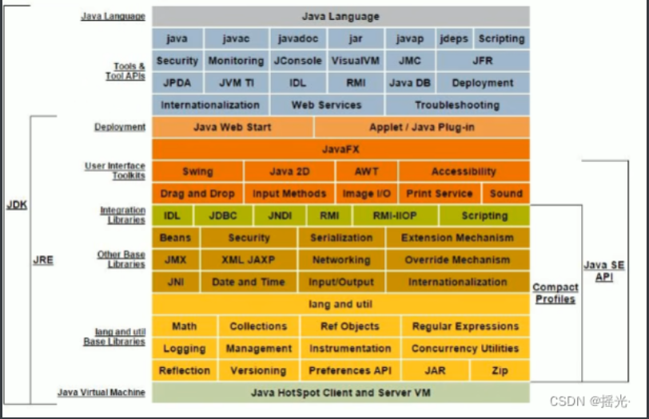
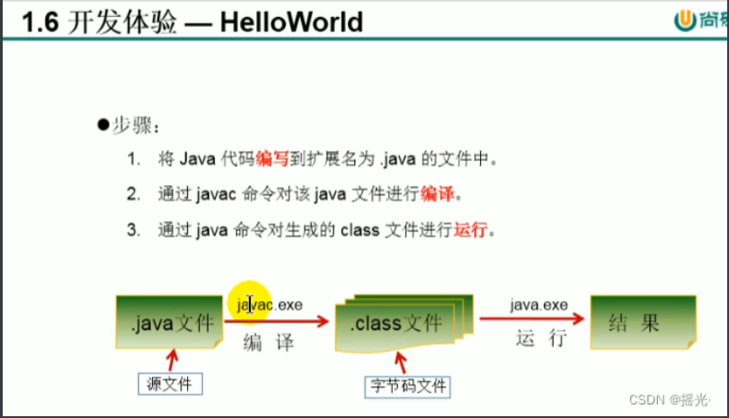
报错解析
错误: 找不到或无法加载主类 HelloWorld.class
将java HelloWorld.class改为
java HelloWorld
若有多个类，则会生成多个字节码文件，但只能运行含有main方法的文件
注释
用于注解说明解释程序的文字就是注释
Java中注释的类型
单行注释
多行注释
文档注释
提高了代码的阅读性；测试程序的重要方法
单行注释
// xxxxxxxxxxxx
多行注释
/* xxxxxxxxxxxxxxxxxx
xxxxxxxxxxxxxxxxxxxx
xxx*/
文档注释
文档注释：java独有，可被JDK提供的工具javadoc解析，生成一套以网页形式体现的该程序的说明文档。
使用：/**
@author 指定java程序的作者
@version 指定源文件的版本
内容
*/
注释内容可以被JDK提供的工具javadoc所解析，生成一套以网页文件形式体现的该程序的说明文档
命令：
javadoc -d 生成文件名 -author -version 解析文件名.java
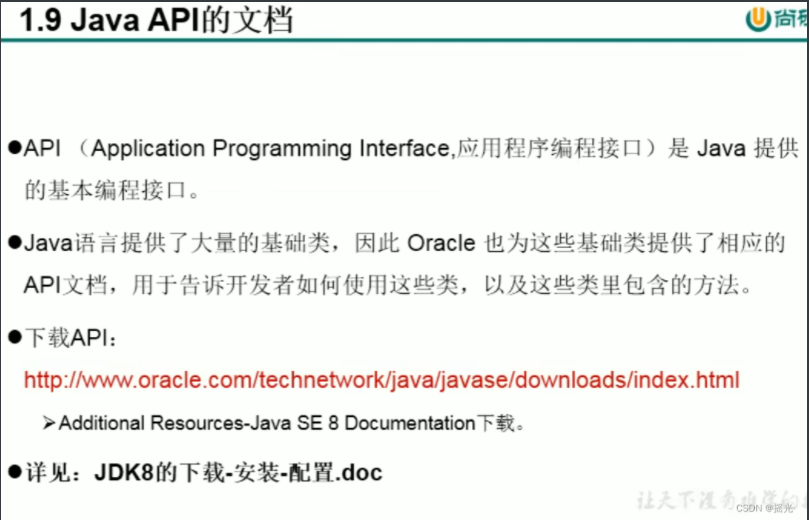
public
在一个java源文件中可以声明多个class。但是，最多有一个类声明为public，且该类名必须和文件名一致
main
程序的入口是main方法。格式是固定的
public static void main (String[] args){
}
或
public static void main (String[] a){
}
或
public static void main (String a[]){
}
输出语句
System.out.print(); //只输出不换行
System.out.println(); //先输出后换行
关键字与保留字
关键字的定义和特点
定义：被Java语言赋予了特殊含义，用做专门用途的字符串
特点：关键字中所有字母都为小写
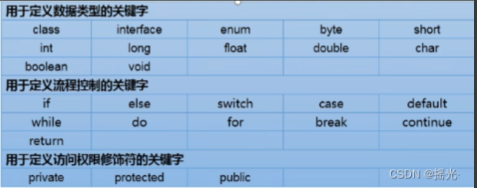
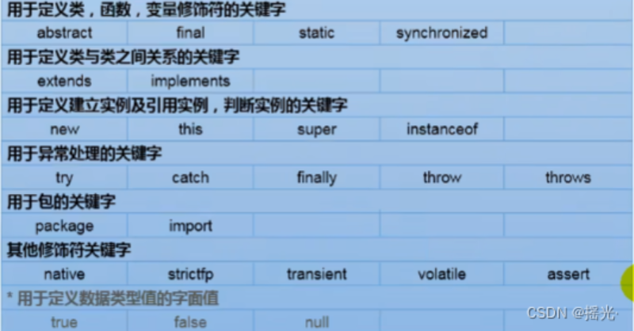
保留字
Java保留字：现有Java版本尚未使用，但以后版本可能会作为关键字使用，自己命名标识符时要避免使用这些保留字
goto、const
标识符
标识符：
Java对各种变量、方法和类等要素命名时使用的字符序列称为标识符
凡是自己可以起名字的地方都叫标识符
定义合法标识符规则
由26格英文字母大小写，0-9，或_或$组成
不可以以数字作为开头
不可以使用关键字和保留字，但能包含关键字和保留字。
Java在严格区分大小写，长度无限制。_
标识符不能包含空格
标识符命名规范
包名：多单词组成时所有单词都小写：xxxyyyzzz
类名、接口名：多单词组成时，所有单词的首字母大小写：XxxYyyZzz
变量名、方法名：多单词组成时，第一个单词首字母小写，第二个单词开始每个单词首字母大小xxxYyyZzz
常量名：所有字母都大写，多单词时每个单词用下划线连接：XXX_YYY_ZZZ
在起名字时，为了提高阅读性，要尽量有意义，“见名知意”
java采用unicode字符集，因此标识符也可以使用汉字声明，但不推荐使用
变量
变量的概念
内存中的一个存储区域
该区域的数据可以在同一类型范围内不断变化
变量是程序中最基本的存储单元，包含变量类型、变量名和存储的值
变量的作用
用于在内存中保存数据
使用变量注意
Java中每个变量必须先声明，后使用
使用变量名来访问这块区域的数据
变量的作用域：起定义所在的一对{}内
变量只有在其作用域内才有效
同一个作用域内，不能定义重名的变量
java定义变量的格式：数据类型 变量名 = 变量值；
变量的分类
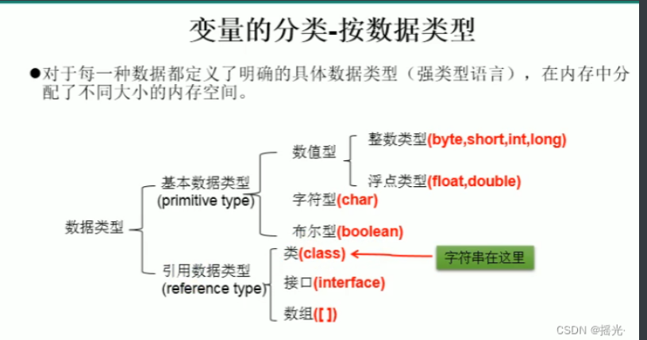

整型
整型类型：byte、short、int、long
Java各整数类型有固定的表数范围和字段长度，不受OS的影响，以保证java程序的可移植性。
java的整型常量默认为int型，声明long型常量须后加 ‘l’ 或 ‘L’
java程序中变量通常声明为int型，除非不足以表示较大的数，才使用long
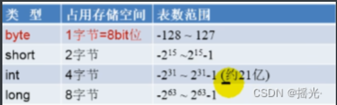
浮点型
浮点类型：float 、double
与整数类型类似，Java浮点类型也有固定的表数范围和字段长度，不受具体操作系统的影响
浮点型常量有两种表示形式：
十进制形式：如 5.12 512.0f .512(必须有小数点)
科学计数法形式：如 5.12e2 512E2 100E-2
float:单精度，尾数可以精确到7位有效数字。很多情况下，精度很难满足需求。
double：双精度，精度是float的两倍。通常采用此类型
Java的浮点型常量默认位double类型，声明float型常量，须后加 ‘f’ 或 ‘F’
字符型
字符类型：char
char型数据用来表示通常意义上的“字符”（2字节）
Java中所有字符都使用Unicode编码，故一个字符可以存储一个字母、汉字，或其他书面语的一个字符
字符串变量的三种表现形式：
字符串常量是用单引号（’’）括起来的单个字符。
Java中还运行使用转义字符 ‘'来将其后的字符转变为特殊字符型常量。
直接使用Unicode 值来表示字符串常量：’\uXXXX’。其中，XXXX代表一个十六进制整数
甚至可以这样
1 | char c = 97; |
char类型是可以进行运算的，因为它都对应有Unicode码。
了解：ASCII码
• 在计算机内部，所有数据都使用二进制表示。每一个二进制位（bit）有 0 和 1 两种状态， 因此 8 个二进制位就可以组合出 256 种状态，这被称为一个字节（byte）。一个字节一 共可以用来表示 256 种不同的状态，每一个状态对应一个符号，就是 256 个符号，从 0000000 到11111111。
• ASCII码：上个世纪60年代，美国制定了一套字符编码，对英语字符与二进制位之间的 关系，做了统一规定。这被称为ASCII码。ASCII码一共规定了128个字符的编码，比如空格“SPACE”是32（二进制00100000），大写的字母A是65（二进制01000001）。这 128个符号（包括32个不能打印出来的控制符号），只占用了一个字节的后面7位，最前面的1位统一规定为0。
缺点：
不能表示所有字符
相同的编码表示的字符不一样。比如，130在法语编码中代表了é，在希伯来语编码中却代表 了字母Gime(ג)
了解：Unicode编码
• 乱码：世界上存在着多种编码方式，同一个二进制数字可以被解释成不同的符号。因此，要想打开一个文本文件，就必须知道它的编码方式，否则用错误的编码方式解读， 就会出现乱码。
• Unicode：一种编码，将世界上所有的符号都纳入其中。每一个符号都给予一个独一 无二的编码，使用 Unicode 没有乱码的问题。
• Unicode的缺点：Unicode 只规定了符号的二进制代码，却没有规定这个二进制代码 应该如何存储：无法区别 Unicode 和 ASCII：计算机无法区分三个字节表示一个符号 还是分别表示三个符号。另外，我们知道，英文字母只用一个字节表示就够了，如果 unicode统一规定，每个符号用三个或四个字节表示，那么每个英文字母前都必然有 二到三个字节是0，这对于存储空间来说是极大的浪费。
了解：UTF-8
• UTF-8 是在互联网上使用最广的一种 Unicode 的实现方式。
• UTF-8 是一种变长的编码方式。它可以使用 1-6 个字节表示一个符号，根据 不同的符号而变化字节长度。
• UTF-8的编码规则：
> 对于单字节的UTF-8编码，该字节的最高位为0，其余7位用来对字符进行编码（等同 于 ASCII码）。
> 对于多字节的UTF-8编码，如果编码包含 n 个字节，那么第一个字节的前 n 位为1，第一 个字节的第 n+1 位为0，该字节的剩余各位用来对字符进行编码。在第一个字节之后的 所有的字节，都是最高两位为”10”，其余6位用来对字符进行编码。
布尔型
boolean类型用来判断逻辑条件，一般用于流程控制：
if条件语句
while循环控制语句
do-while循环控制语句
for循环控制语句
boolean类型数据值允许取值true和false，无null
不可以使用0或非0的整数替代false和true
Java虚拟机中没有任何供boolean值专用的字节码指令，Java语言表达所操作的boolean值， 在编译之后都使用java虚拟机中的int数据类型来代替：true用1表示，false用0表示